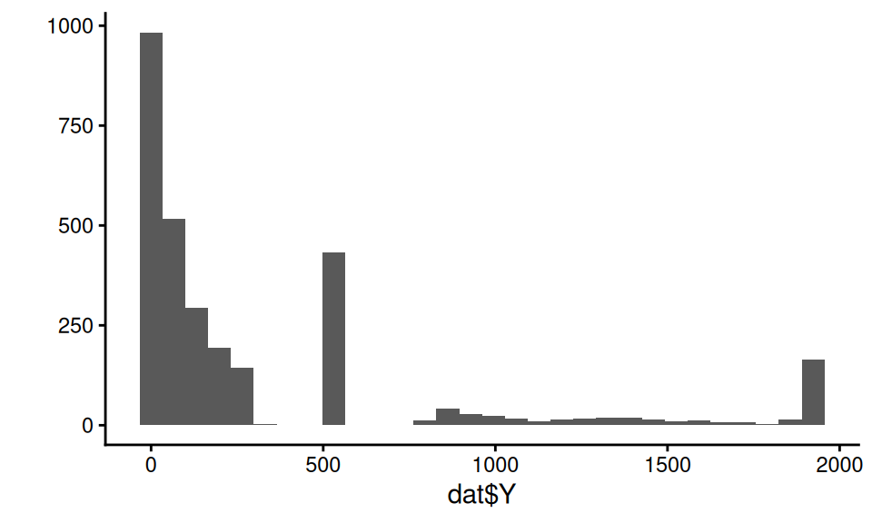
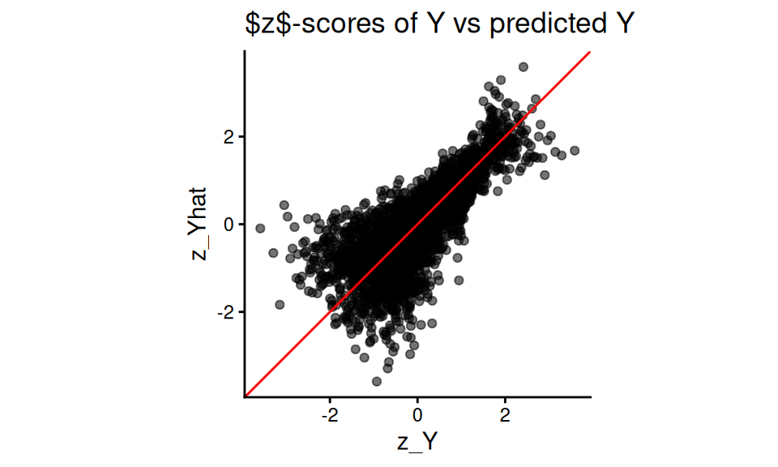
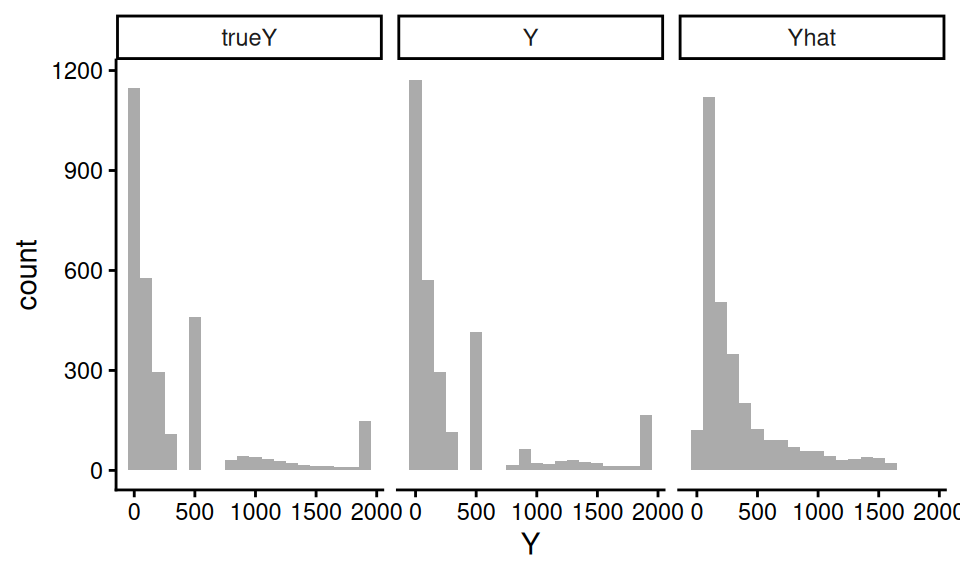

| X1 | X2 | X3 | X4 | Y |
|---|---|---|---|---|
| 0 | 1 | -0.51 | -0.20 | 0.39 |
| -1 | 1 | 4.05 | -2.18 | 3.70 |
| 0 | 1 | 5.06 | -0.32 | 274.82 |
| 5 | 0 | 2.07 | 2.18 | 33.04 |
| -2 | 1 | 3.48 | -3.35 | 9.96 |
15 Simulations as evidence
We began this book with an acknowledgement that simulation is fraught with the potential for misuse: simulations are doomed to succeed. We close this part by reiterating this point, and then discussing several ways researchers might design their simulations so they more arguably produce real evidence.
When our work is done, ideally we will have generated simulations that provide a sort of “consumer product testing” for the statistical methods we are exploring. Clearly, it is important to do some consumer product tests that are grounded in how consumers will actually use the product in real life—but before you get to that point, it can be helpful to cover an array of conditions that are probably more extreme than what will be experienced in practice (simulations akin to dropping things off buildings or driving over them with cars or whatever else). For simulation, extreme levels of a factor make understanding the role they play more clear. Extreme contexts can also help lay bare the limits of our methods.
“Extreme” can go in both the good and bad directions. Extreme contexts can include best-case (or at least optimistic) scenarios for when our estimator of interest will excel, giving a nominal upper bound on how well things could go. Usually extreme simulations are simple ones, with fairly straightforward data generating processes that do not attempt to capture the complexities of real data. Such extreme simulations might be considered overly clean tests.
Extreme and clean simulations are also usually easier to write, manipulate, and understand. Such simulations can help us learn about the estimators themselves. For example, we can use simulation to uncover how different aspects of a data generating process affect the performance of an estimator. To discover this, we would need a data generation process with clear levers controlling those aspects. Simple simulations can be used to push theory further—we can experiment to gain an inclination of whether a novel approach to something is a good idea at all, or to verify we are right about an intuition or derivation about how well an estimator can work.
But such simulations cannot be the end of our journey. In general, a researcher should work to ensure their simulation evidence is relevant. The evidence should inform how things are likely to work out in practice. A set of simulations only using unrealistic data generating processes may not be that useful. Unless the estimators being tested have truly universally stable properties, we will not learn much from a simulation if it is not relevant to the problem at hand. After exploring the overly extreme or overly clean, we have to circle back to providing testing of the sorts of situations an eventual user of our methods might encounter in practice. So how can we make our simulations more relevant?
15.1 Making simulations relevant
In the following subsections we go through a range of general strategies for making relevant simulations:
- Break symmetries and regularities.
- Use extensive multi-factor simulations.
- Use simulation DGPs from prior literature.
- Pick simulation factors based on real data.
- Resample real data directly to get authentic distributions.
- Design a fully calibrated simulation.
15.1.1 Break symmetries and regularities
In a series of famous causal inference papers (Lin 2013; Freedman 2008), researchers examined when linear regression adjustment of a randomized experiment (i.e., when controlling for baseline covariates in a randomized experiment) could cause problems. Critically, if the treatment assignment is 50%, then the concerns that these researchers examined do not come into play, as asymmetries between the two groups get perfectly cancelled out. That said, if the treatment proportion is more lopsided, then under some circumstances you can get bias and invalid standard errors, depending on other structures of the data.
Simulations can be used to explore these issues, but only if we break the symmetry of the 50% treatment assignment. When designing simulations, it is worth looking for places of symmetry, because in those contexts estimators will often work better than they might otherwise, and other factors may not have as much of an effect on performance as anticipated.
Similarly, in recent work on best practices for analyzing multisite experiments (Miratrix et al. 2021), we identified how different estimators could be targeting different estimands. In particular, some estimators target site-average treatment effects, some target person-average treatment effects, and some target a kind of precision-weighted blend of the two. To see this play out in practice, our simulations needed the sizes of sites to vary, and also the proportion of treated within site to vary across sites. If we had run simulations with equal site size or equal proportion treated, we would not see the broader behavior that separates the estimators considered.
Overall, it is important to make your data generation processes irregular.
15.1.2 Use extensive multi-factor simulations.
“If a single simulation is not convincing, use more of them,” is one principle a researcher might take. By conducting extensive multifactor simulations, once can explore a large space of possible data generating scenarios. If, across the full range of scenarios, a general story bears out, then perhaps that will be more convincing than a narrower range.
Of course, the critic will claim that some aspect of your DGP that is not varying is the real culprit. If this aspect is unrealistic, then the findings, across the board, may be less relevant. Thus, pick the factors one varies with care, and pick factors in anticipation of reviewer critique.
15.1.3 Use simulation DGPs from prior literature.
If a relevant prior paper uses a simulation to make a case, one approach is to replicate that simulation, adding in the new estimator one wants to evaluate. In effect, use previously published simulations to beat them at their own game. Using an established DGP makes it (more) clear that you are not fishing: you are using something that already exists in the literature as a published benchmark. By constraining oneself to published simulations, one has less wiggle room to cherry pick a data generating process that works the way you want. Indeed, such a benchmarking approach is often taken in the machine learning literature, where different canonical datasets are used to benchmark the performance of new methods.
15.1.4 Pick simulation factors based on real data
Use real data to inform choice of factor levels or other data generation features. For example, in James’s work on designing methods for meta-analysis, there is often a question of how big simulated sample sizes should be and how many different simulated outcomes per study there should be when generating sets of hypothetical studies to be included in hypothetical meta-analyses. In one project, to make such simulations realistic, James obtained data from a set of past real meta-analyses and fit parametric models to these features, and then used the resulting parameter estimates as benchmarks for how large and how varied the simulated meta analyses should be.
When doing this, we recommend not using the exact estimated values, but instead using them as a point of reference. For instance, say we find that the distribution of study sizes fits a Poisson(63) pretty well. We might then then simulate study sizes using a Poisson with mean parameters of 40, 60, or 80 (where 40, 60, and 80 would be one factor in our multifactor experiment).
15.1.5 Resample real data directly to get authentic distributions
You can use real data directly in your simulation. For example, say you need a population distribution for a slew of covariates. Rather than using something artificial (such as a multivariate normal), you can pull population data on a collection of covariates from some administrative data and then use those data as a population distribution. You then sample (probably with replacement) rows from your reference population to generate your simulation sample.
The appeal here is that your covariates will then have distributions that are much more authentic than some multivariate normal–they will include both continuous and categorical variables, they will tend to be skewed, and they will be correlated in different ways that are more interesting than anything someone could make up.
Long and Ervin (2000) used an approach like this in their study of heteroscedasticity-robust standard errors. They wanted to explore how well these standard errors worked in practice, with a focus on how high leverage points could undermine their effectiveness. Leverage is purely a function of the covariate distribution, so they needed to have an authentic covariate distribution in order to properly explore this issue. Generating realistic leverage is hard to do with a parametric model, so instead they used examples from real life to make the simulation more relevant.
Resampling the real data, and then adding an outcome model on top of that, is a form of semi-synthetic simulation, to acknowledge the hybrid approach, or plasmode simulation, which has ties to electronic health records research. These approaches are often used in causal inference work, where investigators attempt to determine which of the many observational study tools might work best, and when. This context is particularly hard because even with real data in hand, there is no observed ground truth as to what the actual treatment effects are; everything must be estimated.
A key advantage of a semi-synthetic or plasmode approaches is that they can naturally adapt to contexts, such as electronic health records research, where covariate spaces can be extraordinarily high-dimensional, with complex dependence structures that purely parametric simulation cannot plausibly reproduce (Franklin et al. 2014). By simply bootstrapping the covariates from the raw data, all the dependencies are preserved. A design question, if working in a causal inference framework, is then whether any treatment indicator should be included along with the covariates or generated independently; see, e.g., Shaw et al. (2025), who argue that sampling the treatment can cause estimators to appear spuriously biased in some cases.
15.1.6 Build a calibrated simulation
Extending some of the prior ideas even further, one practice in increasing vogue is to generate calibrated simulations. See Kern et al. (2014) for an example of this in the context of generalizing experiments. This paper has one of the earliest uses of this term, as far as we know.
A calibrated simulation is one that is tailored to a specific applied context, with a DGP that is close to what we think the real world is like in that context. Usually, this means we try to generate data that looks as much like a target dataset as possible, with the same covariate distributions and the same relationships between covariates and outcomes. These simulations are not particularly general, but instead are designed to more narrowly inform what how well things would work for a particular circumstance.
Once we have a fully calibrated DGP, targeting a specific dataset, we can then modify it by adjusting sample sizes or other aspects to explore a space of DGPs that are all connected to this core initial calibrated DGP. We can thus still build more general evidence, but the evidence will always be anchored by our initial target.
We usually would build a calibrated simulation out of existing data. As discussed in the prior section, we might start with sampling from the covariate distribution of an actual dataset so that the distribution of covariates is authentic in how the covariates are distributed and, more importantly, how they co-relate.
Just putting a model on top of a real dataset does not necessarily achieve true calibration. The relationship between our covariates and outcome would need to, even if it is model dependent, be realistic in order to truly assess how well the estimators work in practice. It is very easy to accidentally put a very simple model in place for this final component, thus making a calibrated simulation that is quite naive in, perhaps, the very way that counts.
One approach to get a more realistic model between covariates and outcomes is to fit a flexible model to the original data, and then use the model to predict outcomes from the covariates. One would then generate residuals to add to the predictions, ideally in a way that preserves the heteroscedasticity and overall outcome distribution of the original data. For example, in the subsection below, we provide a copula based approach to doing this, which ensures the outcome distribution is in line with the original data while allowing control over how tightly coupled the covariates are to the outcome. We do not say this is the only approach, but rather one of a large range of possibilities.
Clearly, these calibration games can be fairly complex. Calibrated simulations frequently do not lend themselves to a clear factor-based structure that have levers that change targeted aspects of the data generating process (although sometimes you can craft your approach to make such levers possible). In exchange for this loss of clean structure, we end up with a simulation that might be more faithfully capturing aspects of a specific context, making our simulations more relevant to answering the narrower question of “how will things work here?” even if they are less relevant for answering the question of “how will things work generally?”
Semi-synthetic approaches occupy the middle ground between purely synthetic simulation (where every variable is fabricated from pre-specified distributions and the data bear no necessary resemblance to any real population) and fully empirical analysis (where ground truth treatment effects may be unobservable, making evaluation of an estimator difficult).
One canonical motivation for a semi-synthetic approach is the fundamental problem of causal inference: because we never observe counterfactual outcomes (e.g., the outcome we would have seen for a treated unit if it had not been treated) we cannot soly rely on the raw data if we are estimated in the “real” treatment effects. A famous example of a semi-synthetic approach is the IHDP benchmark, in which Hill (2011) removed a subset of treated units from the Infant Health and Development Program randomized trial to introduce selection bias, and then replaced the observed outcomes with simulated potential outcomes generated from a nonparametric Bayesian model; this benchmark subsequently anchored a large fraction of the machine-learning literature on heterogeneous treatment-effect estimation. See, for example the Atlantic Causal Inference Conference data challenge, discussed in Dorie et al. (2019). Gentzel et al. (2021) further systematized this approach, walking through different ways of generating data for simulation evaluation of causal inference methods.
15.2 Case study: Using copulas to generate calibrated data
In this section, we borrow from a blog post1 to illustrate how to use copulas to generate data that is very calibrated to a target dataset. In this example, we will generate new observations \((X, Y)\), where \(X\) is a vector of covariates (some continuous, some categorical) and \(Y\) is a continuous outcome of an arbitrary distribution as described by a target dataset.
A copula is a mathematical device that is used to describe a multivariate distribution in terms of its marginals and the correlation structure between them, and we used it to generate new \(Y_i\) values based on the \(X_i\) in a way that maintained the same marginal distributions for all variables as the empirical dataset.
We found the copula to have several benefits. First, the copula approach can give a different \(Y\) for a given \(X\). By contrast, simply bootstrapping our empirical data (a common way to generate synthetic data that looks like an empirical target) would not achieve this. Second, we could control the tightness of the coupling between \(X\) and \(Y\), while maintaining a fairly complex and nonlinear relationship between \(X\) and \(Y\), and while maintaining possible heteroskedasticity found in the initial dataset.
To illustrate, we will use a (fake) dataset with four covariates, X1, X2, X3, and X4, and an outcome, Y. Here are a few rows of this “empirical” data that we are trying to match:
Our outcome in this case is a bit funky:

The covariates have a correlation structure with themselves and also Y. Here are the pairwise correlations on the raw values:
print( round( cor( dat ), digits = 2 ) ) X1 X2 X3 X4 Y
X1 1.00 -0.22 0.35 0.81 0.52
X2 -0.22 1.00 0.20 -0.17 0.20
X3 0.35 0.20 1.00 0.29 0.69
X4 0.81 -0.17 0.29 1.00 0.44
Y 0.52 0.20 0.69 0.44 1.00We want to generate synthetic data that captures the correlation structure of our empirical data along with the marginal distributions of each covariate and outcome. We will do this via the following steps:
Steps for making data with a copula:
- Predict \(Y\) given the full set of covariates \(X\) using a machine learner.
- Tie \(\hat{Y}_i\) and \(Y_i\) together with a copula.
- Generate new \(X\)s (in our case, via the bootstrap).
- Generate a predicted \(\hat{Y}_i\) for each \(X_i\) using the machine learner.
- Generate the final, observed, \(Y_i\) using our copula.
15.2.1 Step 1. Predict the outcome given the covariates
We can use some machine learning model to make predictions of \(Y\) given \(X\). Here we use a random forest:
library(randomForest)
mod <- randomForest( Y ~ .,
data=dat,
ntree = 200 )
dat$Y_hat = predict( mod )Our predictive model for \(Y\) can be anything we want: we are just trying to get some predicted \(Y\) that is appropriately tied to the \(X\).
Our predictions will be under dispersed and not natural in appearance. For starters, the standard deviation of the \(\hat{Y}\) will be less than the original \(Y\), because our predictions are only getting at the structural aspects, not the residual noise:
tibble( sd_Yhat = sd( dat$Y_hat ),
sd_Y = sd( dat$Y ),
cor = cor( dat$Y_hat, dat$Y ) ) %>%
knitr::kable( digits = c(1,1,2) )| sd_Yhat | sd_Y | cor |
|---|---|---|
| 357.4 | 523.4 | 0.91 |
Our synthetic \(Y\) values will need to be “noised up” so they look more natural. We also want them to match the empirical distribution of our original data.
15.2.2 Step 2. Tie \(\hat{Y}\) to \(Y\) with a copula
The first step of the copula approach is to make a function that converts empirical data to normalized \(z\)-scores based on their percentile rank, as we will be doing all our data generation in “normal \(z\)-score space.” In other words, we take a value, calculate its percentile, and then calculate what \(z\)-score that percentile would have, if the value came from a standard normal distribution.
Here is a function to do this:
convert_to_z <- function( Y ) {
K = length(Y)
r_Y <- rank( Y, ties.method = "random" )/K - 1/(2*K)
z <- qnorm( r_Y )
z
}We calculate percentiles by ranking the values, and then taking the midpoint of each rank. If we had 20 values, for example, we would then have percentiles of 5%, 15%, …, 95%. (We can’t have 0 or 100% since this will turn into Infinity when converting to a \(z\)-score.)
Using our function, we convert both our \(Y\) and predicted \(Y\) to these normal \(z\)-scores:
z_Y = convert_to_z( dat$Y )
z_Yhat = convert_to_z( dat$Y_hat )
qplot( z_Y, z_Yhat, asp = 1, alpha=0.05 ) +
geom_abline( slope=1, intercept=0, col="red" ) +
labs( title = "$z$-scores of Y vs predicted Y" ) +
coord_fixed() +
theme( legend.position = "none" )
Note how the \(z\)-scores have smoothed our Y distribution due to the random ties, breaking up our spikes of identical values. We can then see how coupled the predicted and actual are:
stats <- tibble(
rho = cor( z_Y, z_Yhat ),
sd_Y = sd( z_Y ),
sd_Yhat = sd( z_Yhat ) )
stats# A tibble: 1 × 3
rho sd_Y sd_Yhat
<dbl> <dbl> <dbl>
1 0.770 1.000 1.00015.2.3 Step 3. Get some new Xs
So far we are just modeling relationship in our original data. We next set the stage for generating a new dataset. We start with making more \(X\) values. A simple trick is to simply bootstrap the data, keeping the \(X\) only. We might, for example, generate a new dataset of 500 observations like so:
nd = dat %>%
dplyr::select( starts_with("X") ) %>%
slice_sample( n = 500, replace = TRUE )If we don’t want exact duplicates of the vectors of \(X\) values in our data, we can use other methods such as the synthpop package, which generates data based on a series of conditional distributions.
So we can check our work later, we are instead going to cheat and use a dataset, new_data that is generated from the same DGP as our original fake data. It looks like so:
# A tibble: 3,000 × 5
X1 X2 X3 X4 trueY
<dbl> <dbl> <dbl> <dbl> <dbl>
1 1 1 1.89 0.906 52.7
2 4 0 2.85 2.41 106.
3 0 1 4.52 -1.05 217.
4 1 1 4.53 -0.377 86.6
5 7 1 4.06 3.41 1923.
6 -2 1 -1.70 -3.05 10.8
7 -1 1 1.50 -2.50 10.1
8 7 1 5.59 3.56 1099.
9 0 1 2.60 -0.820 33.8
10 7 0 3.01 2.68 550
# ℹ 2,990 more rowsTo be very specific, trueY would not normally be in our data at this point; we have it here so we can compare our generated Y to the true Y to see how well our DGP is working. In practice, we would not be able to do this: we would need to generate new \(X\) like shown above.
15.2.4 Step 4. Generate a predicted \(\hat{Y}_i\) for each \(X_i\) using the machine learner.
This step is quite easy:
new_data$Yhat = predict( mod, newdata = new_data )Done!
15.2.5 Step 5. Generate the final, observed, \(Y_i\) using a copula that ties \(\hat{Y}_i\) to \(Y_i\).
Now we generate our new \(Y\) by converting our predictions (the Yhat) to the new \(Y\) via the copula. We are bascially using the same pieces that are in the \(z\)-score function, above.
We first generate the percentiles the Y-hats represent:
K = nrow(new_data)
new_data$r_Yhat = rank( new_data$Yhat ) / K - 1/(2*K)
summary( new_data$r_Yhat ) Min. 1st Qu. Median Mean 3rd Qu. Max.
0.0001667 0.2500833 0.5000000 0.5000000 0.7499167 0.9998333 We then convert the percentiles to the \(z\)-scores they represent:
new_data$z_Yhat = qnorm( new_data$r_Yhat )
summary( new_data$z_Yhat ) Min. 1st Qu. Median Mean 3rd Qu.
-3.5879147 -0.6742276 0.0000000 -0.0000057 0.6742276
Max.
3.5879147 We next use a formula for the conditional distribution of a normal variable given the other variable, namely, if \(X_1, X_2\) both have unit variance and mean zero, we use \[X_2 | X_1 = a \sim N( \rho a, 1 - \rho^2 ) .\] With this formula, we generate \(Y\) as so:
rho = cor( z_Y, z_Yhat ) # from our empirical
new_data$z_Y = rnorm( K,
mean = rho * new_data$z_Yhat,
sd = sqrt( 1-rho^2 ) )Now, finally, for each observation in z-space, we figure out what rank it would correspond to in our empirical distribution, and then take that empirical data point as the value:
empDist = sort(dat$Y)
K = length(empDist)
new_data$r_Y = ceiling( pnorm( new_data$z_Y ) * K )
new_data$Y = empDist[ new_data$r_Y ]And we are done!
15.2.6 Assessing the copula’s success
Let us next see how the distribution of our generated \(Y\) to the true \(Y\) from the real DGP:

trueY and \(Y\) are very close! Note the Yhat is quite different, by contrast.
We further check our process by looking at how closely the correlations of our new Y with the Xs match the correlations of the true Y and the Xs:
| Variable | Y | trueY |
|---|---|---|
| X1 | 0.42 | 0.53 |
| X2 | 0.23 | 0.19 |
| X3 | 0.50 | 0.67 |
| X4 | 0.38 | 0.43 |
Our new Y roughly looks like the true Y, with respect to the correlation with the Xs. We gave our copula approach a hard test here–simpler covariate relationships will be better captured. That said, this doesn’t seem that bad.
15.2.7 Building a multifactor simulation from our calibrated DGP
In the above, we made a DGP that mimics, as closely as we can, the empirical data we are targeting. In an actual simulation, however, we would generally want to manipulate different aspects of our DGP to explore how different methods might function.
We offer some examples of how to do this for this context.
First, we can directly set rho to control how tightly coupled the outcome is to the covariates. If rho is 0, then our outcome distribution will be exactly the same, but there would be no connection between it and the covariates. For rho of 1, the outcome would be perfectly predicted by the predicted outcome, which is a function of the covariates. The strength of the connection between \(X\) and \(Y\) is maximized.
Second, we can easily control sample size by generating larger or smaller datasets of \(X\) and then generating \(Y\) from those \(X\).
Third, we can drop some of our \(X\)s by simply not including them in the prediction model, thus making them noise variables. We may still end up with relationships between a dropped \(X\) and \(Y\) due to the dropped \(X\)’s correlation structure with other \(X\)s that are tied to \(Y\).
15.3 Simulation Sections in Methods Papers
Simulations, as we have argued, have many uses, and appear in many places. One of the most prevalent is the simulation section of a statistical methods paper. In this section, we make a case for what kinds of simulation evidence a methods paper should have, and outline several principles to consider if you are writing up, or reviewing, such a section.
In what follows, we discuss several related goals that simulations in methods papers should serve, along with practical guidance on how to accomplish each of them. We then give some advice on navigating the many design decisions of a simulation, and conclude with some guiding principles for achieving these ends.
15.3.1 The simulation’s purpose
Ideally, a simulation study in a methods paper is not decoration. In the best case, it provides evidence for an argument. These arguments can be pointed (the researcher has an agenda to prove) or more exploratory (the researcher is trying to learn something). Which kind of argument correlates with what kind of methods paper is being written.
Broadly speaking, there are two kinds of methods papers that involve simulation. The first is a methods development paper. These usually propose some novel approach, have some (mathematical) theory arguing for its utility, have a simulation to justify or illustrate the argument, and finally an applied example to demonstrate the method’s use. For these papers, the argument of the simulation is generally something along the lines of “our proposed method is an improvement over whatever else is out there.” The simulation evidence is then the empirical case for whatever claim is being made.
The second type of methods paper is a “simulation paper,” where the researchers are specifically using simulation to evaluate some set of research questions. Here there is not necessarily a specific case being made, but instead a research question such as, “which of a set of methods is most appropriate for our given context of interest?” Now the simulation results are evidence to help adjudicate which options are most promising, and when.
In either case, the simulation evidence is only good insofar as the choice of data generating process, factors and levels, and performance metrics are relevant.
15.3.1.1 Increase belief in the theory
We generally hope that a mathematical theorem in a paper is correct, but few of us will spend the time carefully reading any accompanying proof or deriviation to ensure this is so. In fact, many papers have these derivations in a supplement, and often they are cut down, without many of the intermediate steps.
Simulation can provide a sanity check and reassurance in this case. One might even say that the most basic job of a simulation is to verify that the theory behind a method actually works. Such a “sanity check” simulation is often a simple one. A clean, stylized data generating process with the key structural features the theory assumes—perhaps independent errors, a specific parametric form for the outcome, or a particular covariate distribution—is entirely appropriate here. The goal is not to show that the method works in a realistic context; it is to show that the theory does what it says it does. For example, if your theory says the estimator has a bias that diminishes at rate \(1/n\), you should see this as a linear relationship of bias vs. \(n\) on a log scale.
For this type of simulation, one useful practice is to verify not just that the point estimates look right, but also that the uncertainty quantification is correct. Coverage of nominal 95% confidence intervals is a particularly demanding test: it requires both that the point estimate be close to unbiased and the standard error be well estimated. Showing close-to-nominal coverage in a clean setting can be a quite meaningful form of theoretical verification.
15.3.1.2 Increase the readibility of your paper
Methods papers can be extremely technical, and the theory can be difficult to understand. If the notation is not well laid out (which in many cases it is not), even deciphering what a theorem is saying, or what an estimator actually is, can be difficult. The simulation section often has to get down to brass tacks, laying out the problem cleanly. Thus simulations can be an accessible entry point into your paper, providing some concrete examples of what the context for the estimators given are, what assumptions the estimators depend on, and so forth.
While we advocate making the rest of your paper readable, we also note that a good simulation can help add clarity to your overall project. Clean simulations of this type are also useful for illustrating how the method works.
15.3.1.3 Demonstrate finite-sample relevance
Most statistical theory is asymptotic: as \(n \to \infty\), the estimator is consistent; as the number of studies grows, the coverage of a confidence interval approaches 95%; as the sample size grows, some test statistic converges to a chi-squared distribution. Such asymptotic results might say little about whether the method works at the sample sizes anyone would actually encounter. Simulations, on the other hand, can show that at some reasonable \(n\), things are in fact close to what theory promises (for at least the contexts explored). For an alarming example of the perils of “asymptopia,” Kang et al. (2018) examines weak instruments for Instrumental Variable analysis. Even though asymptotic IV estimators guarantee 95% coverage eventually, Kang et al. find coverage below 50%!
If you have derived a new estimator and proved it is consistent and asymptotically normal, a simulation showing that at \(n = 500\) the bias is small, the sampling distribution is approximately normal, and the confidence intervals achieve close to nominal coverage could be reassuring to readers in a way that the asymptotic proof alone might not be. Readers are (rightly) skeptical of novel methods, and seeing the theory confirmed in a clean, interpretable simulation builds trust.
A second major purpose of simulation is therefore to show that the method works— or to characterize how well it works—in the finite-sample conditions that are realistic for the problem. This is where the multi-factor simulation framework developed earlier becomes essential. Finite-sample performance depends on more than just \(n\). It depends on signal-to-noise ratios, covariate distributions, the complexity of the true outcome model, the degree of model misspecification, and a host of other features. A convincing finite-sample simulation should vary these features systematically, using levels that span the realistic range of what practitioners in the domain are likely to encounter.
This requirement does put a burden on the researcher to understand their domain. What are typical sample sizes in your field? What kinds of covariate structures are common? How much model misspecification should one worry about? The simulation factors you choose, and the levels you assign to them, are an implicit argument about what a domain looks like.
15.3.1.4 Motivate and contextualize the subsequent applied analysis
A methods paper often includes an applied data analysis, usually to show that the methods work on real data and to make an appeal that the methods designed are not completely useless or irrelevant. Simulations can play a supporting role here. If your applied analysis shows that methods A and B gave different answers, then you might need your simulation section to make the case that we should believe A and not B.
Such a case can be best built via what one might call a domain-calibrated simulation, distinct from the multifactor simulation. Where the multifactor simulation explores many conditions to establish (ideally) general properties, a domain-calibrated simulation is specifically designed to mimic the applied dataset in the paper. It is built using the methods discussed above: the covariate distribution migth be drawn from the actual data, the outcome model might be fit to the actual data, and key features of the real setting (sample size, proportion treated, etc.) would all be matched.
The purpose of this calibrated simulation is not to add statistical generality—it may add very little—but to argue that, in a context that looks a lot like the problem we care about, we should prefer one method over another. This is especially true if the multifactor simulation shows that in some cases we might prefer the other method, or if in some cases there is no real difference between the two.
A natural structure for a methods paper, then, is to present the multifactor simulation first to establish a general story, and then follow it with a calibrated simulation tied to the applied data.
15.3.3 Principles of design and presentation
We next dive into some suggested principles.
15.3.3.1 Don’t make your DGP stupid
All too often, the simulation section of a methods paper uses a DGP that is so extreme it is hard to image how it can be useful for anything other than a quick check of theory. In reading papers, watch for exponential functions, extremely small amounts of noise relative to the variation of the covariates, or other features that make the DGP unrealistic.
Do not do this, if you do not have good reason.
15.3.3.2 Figures, not Tables
As we discussed extensively in prior chapters, use figures, not tables. Figures allow you to show trends (as something goes up, something else goes down, and so forth). Tables do not make trends apparent.
That said, including all your raw numbers in an excel table or csv file as supplemental material is good for transparency. You might also have the raw values in a supplement, if you think people may be interested in exactly what those numbers are.
15.3.3.3 Avoid selective reporting
Simulations are particularly susceptible to selective reporting. The combination of degrees of freedom available to the researcher and the pressure to present results favorably creates a real risk of findings that do not paint an accurate picture.
There are three ways to defend against selective reporting.
The first is advanced planning. Before running your main set of simulations, think through the full set of factors you will vary and commit to a range of levels for each. If you deviate from this plan—because a factor turned out not to matter, or because a computational constraint forced a change—be transparent about why. Full factorial designs, with all combinations of all levels, are preferable to hand-selected sets of scenarios precisely because they leave less room for post-hoc selection.
The second is code sharing. Code sharing is increasingly expected in many fields, and for simulation studies it is particularly valuable. Sharing the simulation code allows readers to verify results, extend the simulation to additional conditions, or reproduce your findings if they are skeptical. Beyond serving the field, code sharing also disciplines the researcher: knowing that others could read and run the code tends to make one more careful and more honest. In practice, this means keeping simulation code clean and well-documented, something that the software engineering practices discussed earlier in this book will help facilitate.
The third is to find contexts where your methods fail. If you present simulations that include boundaries where your methods fail, then you are giving a more complex picture of the landscape of performance. You also gain credibility: by showing areas where things fall apart, you are signaling that you are not just cherry picking favorable results.
15.3.3.4 Tell a coherent story
The best simulation sections should not be a list of very specific findings. This, for example, is poor:
In scenario A, method X had an RMSE of 0.34, and method Y had an RMSE of 0.23, so Y was preferred, while in scenario B, method X’s RMSE rose to 0.44 and Y rose to 0.52, which was higher. In scenario C, X’s RMSE rose again to 0.55, higher than Y’s 0.45, and in scenario D, X’s RMSE was 0.40, lower than Y’s 0.42.
This is better:
Results were mixed: Method X outperformed Y in scenarios B and D, while Y outperformed X in scenarios A and C.
And even better:
In Scenarios B and D, which had a nonlinear trend, method X outperformed Y, but Y was superior when the trend was linear.
In the discussion you then might have:
Earlier we saw that method X outperformed Y when the trend was nonlinear, but Y outperformed X when the trend was linear. This is consistent with the fact that method X is designed to capture nonlinear trends: it has a stability cost (note the higher SEs on Table Q), but that cost is worth it if there is something to correct for. We generated our nonlinear trend based on our fit model to the applied example discussed in the next section; we therfore view the risk of increased bias in practical settings as quite real, and thus recommend using X over Y in practice, without strong reason to believe a linear trend.
Some people try to report all the results, without interpretation, and then have the discussion after. Under this model, the reporting part can be extremely difficult to write, and extremely painful and boring to read. Keep it short and refer to the tables and figures for the details. Do not just list all those numbers without any contextualization.
In fact, if you can get away with it, just present the figures and tables, and dive right into interpretation as you explain how to read those tables.
E.g., continuing the running example from above:
Table Q1 shows method X, with the bias correction, outperforms Y in the “nonlinear” scenarios, but Y outperforms when the trend is in fact linear. The higher RMSE in the linear scenarios is a stability cost (also note the higher SEs on Table Q2), but that cost is worth it if there is something to correct for. We generated our nonlinear trend based on our fit model to the applied example discussed in the next section; we therfore view the risk of increased bias in practical settings as quite real, and thus recommend using X over Y in practice, without strong reason to believe a linear trend.
Overall, make an argument. Give the reader your best understanding of why the proposed method works, when it works, how much it matters, and when one should or should not worry.
Your visualizations should be selected to support your argument. In the above, connect your linear scenarios with a line, and the non-linear ones with a different line, to make it easy to see the pattern. Curate your visualizations to show the findings that matter, and put the remainder in the supplement for transparency.
15.3.3.5 Give summaries, not details, in the main text
Extending the above, in the main text you might have summaries of your performance. For example, in a large multifactor simulation of hundreds of scenarios, you might say
Across the scenarios considered, the RMSE of method X ranged from 0.24 to 0.64. The other methods generally had higher RMSEs, ranging from 0.32 to 0.81. That said, in 15% of the scenarios explored, method X’s RMSEs were more than 20% larger than the overall average, well beyond what could be explained by the Monte Carlo uncertainty.
15.3.3.6 Keep the main text simple
Not everything should be in the main text. It is entirely appropriate to put secondary results—additional factor levels, supplementary metrics, robustness checks—in an appendix or supplementary materials. What belongs in the main text are the figures that most directly supports the central claim of the paper, presented as clearly and compactly as possible.
15.3.3.7 Report MCSEs, but do it concisely
Including error bars from MCSEs on your plots can increase clutter substantially. Instead consider putting the range of MCSEs in the caption of your plot.
In your text, do not report differences between methods that are smaller than the MCSEs you are calculating. If arguing equivalence, say that your simulations show the methods are about the same, but could differ by about twice your MCSE (getting a true MCSE on the difference can be surprisingly tricky as the estimated performance measures of different methods will be correlated; see Section 14.4 for further discussion).
15.4 Concluding Thoughts
For a methods paper, simulations should generally serve at least three purposes: verifying that the theory is correct in clean conditions, demonstrating that the method works in finite samples at realistic scales for the domain, and motivating the applied analysis by showing how the method performs in a context that resembles the real application. It should use performance metrics that are directly relevant to the paper’s central claims, report enough replications to make the results trustworthy, and be presented in a way that tells a coherent story rather than merely exhausting the reader with numbers and details. Getting all of this right is not easy, but it is what separates a simulation study that genuinely advances knowledge from one that merely fills space between the theory section and the data analysis.
Simulations generally have a bad reputation, and that is unfortunately deserved. When reading methods papers, keep an eye out for extreme simulations that have no connection to reality, simulations that only report on one metric, leaving other ones unstated, and reported measures where it is impossible to tell if a difference is substantively meaningful or not. These examples are all too easy to find. Please do not increase the pool, in this regard.
See (https://cares-blog.gse.harvard.edu/post/copulas-for-simulation/)↩︎